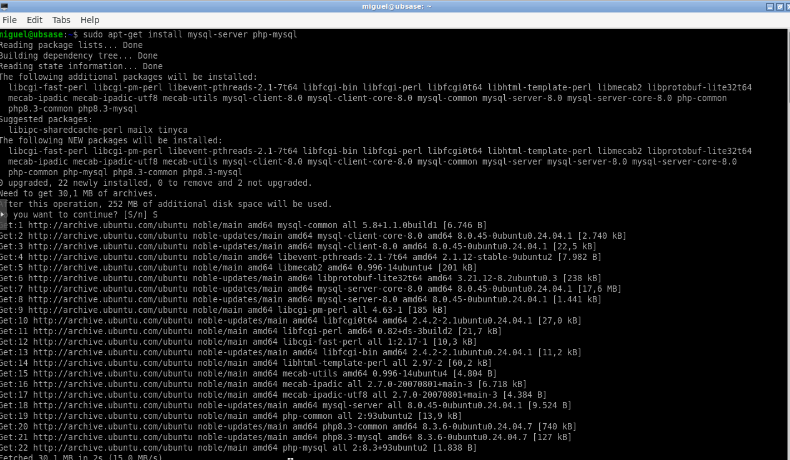
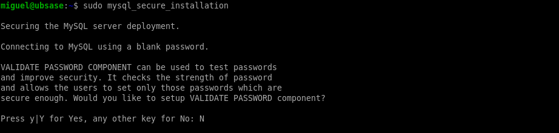
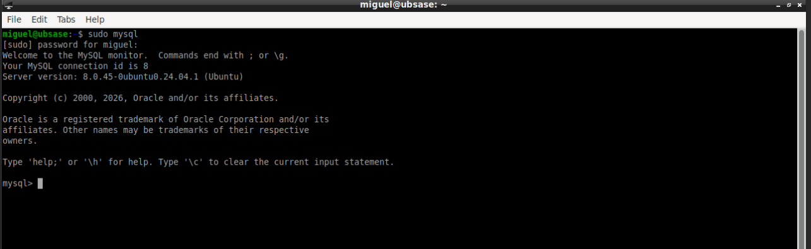
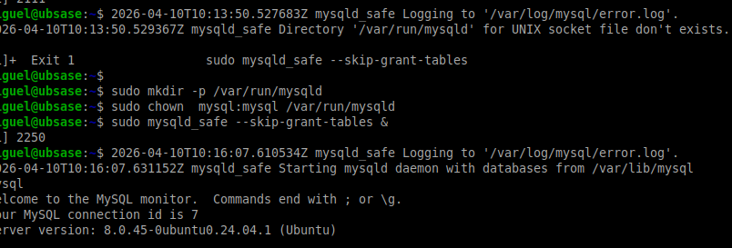
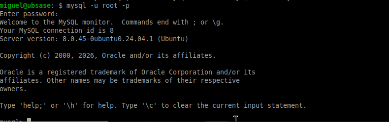
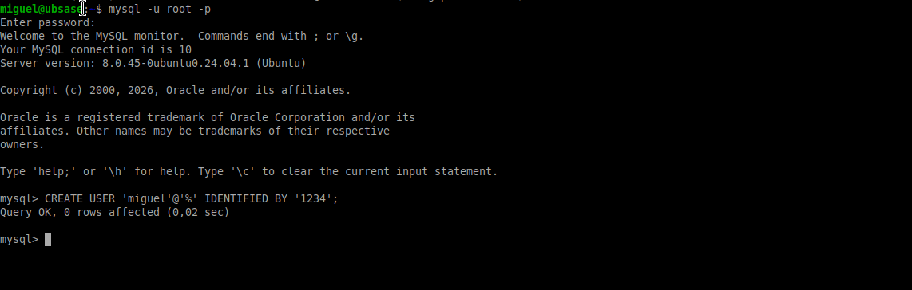
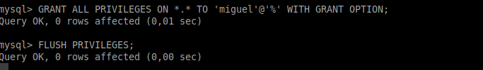

En esta práctica se instala MySQL Server y se realiza su configuración básica, incluyendo la seguridad inicial, acceso como root y creación de usuarios.
sudo apt-get install mysql-server php-mysql
Se instala el servidor MySQL junto con soporte para PHP.

Captura ABD6: Instalación de MySQL.
sudo mysql_secure_installation
Este proceso permite:
RECOMENDADO: aceptar todas las opciones de seguridad.

Captura ABD7: Configuración de seguridad.
sudo mysql
Se accede al servidor como usuario root sin contraseña inicial.

Captura ABD8: Acceso a MySQL.
Se ejecuta:
ALTER USER 'root'@'localhost' IDENTIFIED WITH caching_sha2_password BY 'password';
Esto establece una contraseña para el usuario root.

Captura ABD9: Cambio de contraseña.
mysql -u root -p
Se verifica que el acceso con contraseña funciona correctamente.

Captura ABD10: Login correcto.
CREATE USER 'usuario'@'%' IDENTIFIED BY 'password';
El símbolo % permite conexión desde cualquier equipo.

Captura ABD11: Creación de usuario.
GRANT ALL PRIVILEGES ON *.* TO 'usuario'@'%' WITH GRANT OPTION;
Se conceden todos los permisos al usuario creado.

Captura ABD12: Permisos asignados.
MySQL ha sido instalado y configurado correctamente.
Se ha asegurado el sistema, se ha configurado el acceso root y se ha creado un usuario con permisos completos, dejando el entorno preparado para su uso.